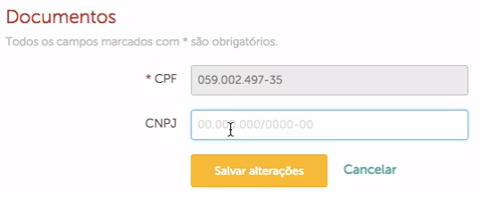

Javascript e acessibilidade
Publicado em:
@luiz
Se temos uma web rica em termos de experiência do usuário, muito se deve ao Javascript, que nos permite criar componentes dinâmicos e torna a web uma plataforma muito mais interativa. Porém, com grandes poderes, vêm grandes responsabilidades e, se não tomarmos cuidado, dependendo da solução que implementarmos, podemos prejudicar a usabilidade e a acessibilidade das nossas interfaces. Num post anterior, vimos que até o CSS pode atrapalhar em alguns casos, quem dirá o Javascript!
Considere por exemplo a tarefa de preencher um formulário online. O Javascript pode ajudar muito ao validar e formatar automaticamente os dados preenchidos. Ou então ao esconder e mostrar elementos conforme o progresso de preenchimento.

No entanto, uma máscara de formulário pode acabar atrapalhando o usuário se não for bem implementada. Já encontrou uma máscara que não permite que você apague o que digitou? Ou então uma máscara que não permite a colagem de texto copiado? A implementação correta de uma máscara de formulário é uma tarefa bastante complexa e requer bastante cuidado e testes extensivos para dar bons resultados!
Outra ajuda que também pode gerar confusão é o avanço automático entre campos de formulário, também implementado via Javascript. Sem o devido cuidado, podemos acabar impedindo o usuário de navegar livremente entre os campos, ou então de editar um campo já preenchido!
Esses são casos em que a usabilidade, de uma forma geral, acaba ficando prejudicada, ainda que a intenção inicial fosse ajudar o usuário. Com certos cuidados, conseguimos evitar esses e outros problemas para a maioria dos usuários. Mas como ficam aqueles que dependem de ferramentas assistivas para acessar a web?
Validação de formulários
Quando implementamos uma validação de formulários com Javascript, normalmente nos preocupamos apenas em fazer com que as mensagens de erro apareçam ou desapareçam corretamente, de acordo com a edição feita pelo usuário. Uma solução bem simples para essa tarefa pode ser acessada aqui.
Note que, sem uma estilização básica da mensagem de erro, pode ser bem difícil identificá-la no meio do formulário! Num post anterior, vimos como a estilização pode prejudicar a acessibilidade de uma página; porém, esse é um caso em que a estilização ajuda muito a deixar a página mais acessível, em especial para usuários com alguma deficiência cognitiva. Veja aqui como poderia ser uma estilização simples para essa mensagem de erro.
Além da melhoria visual, são necessárias melhorias semânticas no nosso código. Sem elas, uma ferramenta assistiva, como um leitor de tela, não sabe informar ao usuário que o elemento que colocamos na página via Javascript é uma mensagem de erro de validação. Isso pode fazer com que o usuário sequer perceba que há um erro no formulário!
Uma primeira melhoria que podemos fazer, então, é ligar cada campo semanticamente à sua mensagem de erro. Idealmente, faríamos isso com o atributo aria-errormessage passando, nesse atributo, o id do elemento com a mensagem de erro, mas o suporte ao atributo aria-errormessage não é muito bom. Para contornar essa limitação, podemos usar, em vez dele, o atributo aria-describedby, que serve para apontar para elementos que descrevem melhor aquele que o declara. Veja um exemplo abaixo de como poderia ficar a marcação de um campo de senha com uma mensagem de erro de validação e uma descrição de como o campo poderia ser preenchido, e note que podemos apontar para mais de um campo no atributo.
<input type="password" aria-describedby="erro criterios">
<p id="erro" class="erro-validacao__mensagem">Senha muito fraca</p>
<div id="criterios">
<p>A senha deve atender aos seguintes critérios</p>
<ul>
<li>Conter letras e números</li>
<li>Ter pelo menos 8 caracteres</li>
</ul>
</div>
Como a ideia é adicionar a mensagem de erro via Javascript, é necessário gerar dinamicamente um id para a mensagem, a fim de colocá-lo no atributo aria-describedby. Além disso, a adição ou remoção do id da mensagem do atributo aria-describedby deve ser feita com cautela para não destruir o conteúdo original desse atributo (caso ele já venha preenchido no carregamento da página). Apesar de não ser muito simples, essa é uma alteração que já ajuda bastante o usuário e que só precisa ser feita na biblioteca de validação, ou seja, uma única vez. Caso você use uma biblioteca de validação Javascript que leva acessibilidade em conta, provavelmente ela já cuida disso para você. Aqui, você pode testar o formulário com a implementação do controle do atributo aria-describedby.
Ouça, abaixo, como é feita a leitura de um campo com erro de validação.
Se a mensagem de erro não for lida, fica muito mais difícil de o usuário entender o que está acontecendo. Assim, com essa alteração no código, já melhoramos bastante a acessibilidade. Mas ainda assim o usuário pode ficar perdido, pois o simples fato de as mensagens serem acrescentadas na tela não faz com que elas sejam lidas automaticamente. Além disso, se fosse apenas dito para o usuário "Campo obrigatório", como ele saberia a qual campo a mensagem se refere? Por isso, precisamos fazer pelo menos mais uma alteração: quando um ou mais campos estiverem inválidos, devemos mover o foco do teclado para o primeiro campo inválido. Teste aqui a versão com essa alteração e veja que ela ajuda todos os usuários, não apenas aqueles que dependem de leitores de tela. Eis um exemplo claro de que melhorias de acessibilidade ajudam todos os usuários.
Conclusão
Neste post, vimos casos em que o uso de Javascript prejudica a usabilidade e a acessibilidade. Mas vimos, também, que o uso adequado de Javascript pode melhorar esses pontos, bastando tomar alguns cuidados! Estudamos o caso da validação de formulários, mas ainda há muitos outros padrões de usabilidade que podemos explorar e tentar melhorar nesse quesito. Ou seja: mais posts a caminho!
E você, tem alguma experiência em que o Javascript afetou a acessibilidade da sua página, seja de forma positiva ou negativa? Compartilhe conosco!